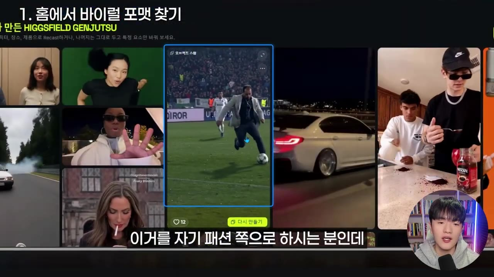
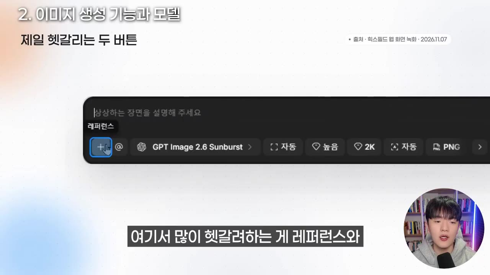
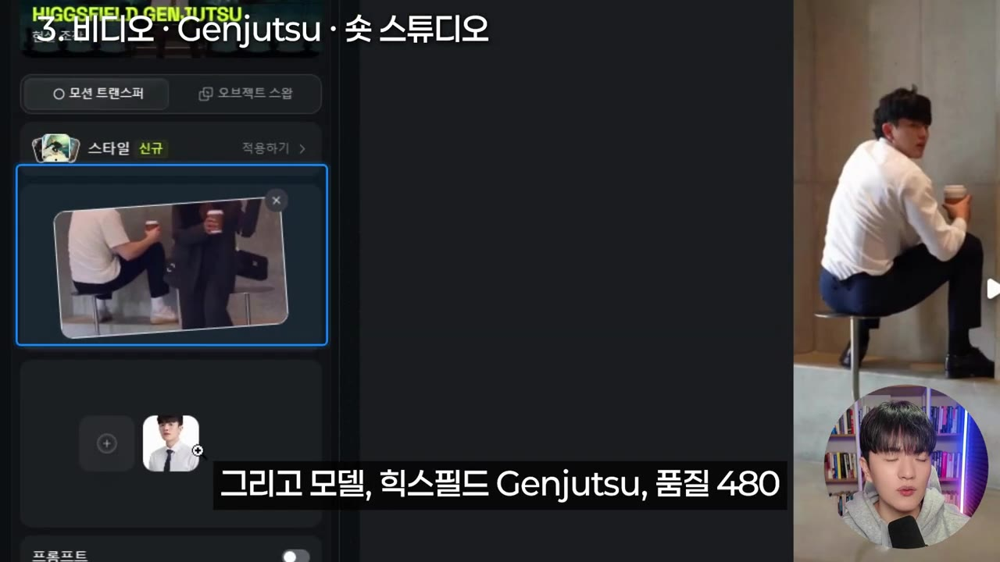
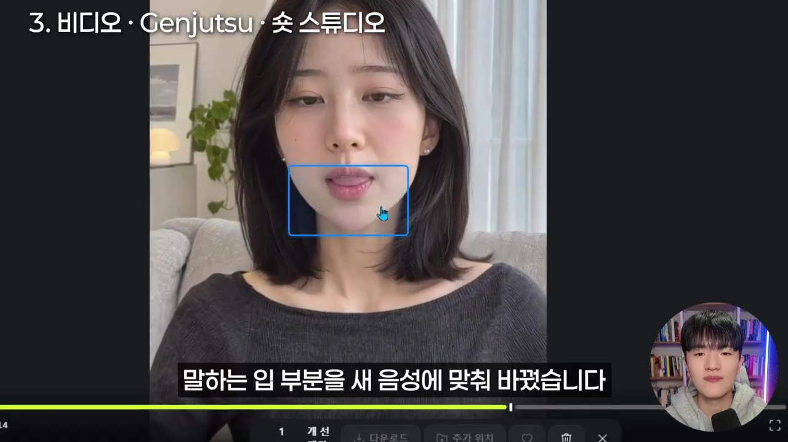
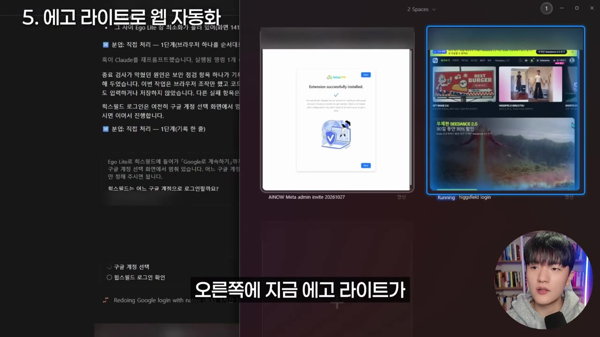
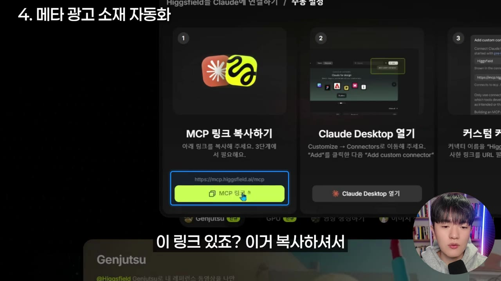
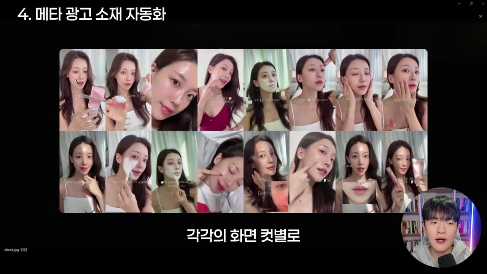

“힉스필드 자동화 하세요” 이렇게 하면 힉스필드로 영상 자동화 할 수 있습니다. 힉스필드 X ego lite 활용법
▶ 원본 영상 보기한눈에 보기
- 힉스필드(Higgsfield)는 이미지·영상 생성 모델과 바이럴 템플릿을 한곳에 모은 플랫폼이고, 진행자는 2026년 11월 기준 이미지는 GPT Image 2.6, 영상은 Seedance 2.5를 가장 좋은 모델로 꼽는다.
- 이미지 생성에서는 '레퍼런스'(닮게 만들 결과물)와 '요소'(결과물에 반드시 넣을 인물·사물)를 구분해 쓰는 것이 핵심이다.
- 영상은 Genjutsu(모션 트랜스퍼), 모션 컨트롤, 숏 스튜디오(내 캐릭터·목소리)로 바이럴형 콘텐츠를 만든다.
- 힉스필드 MCP를 Claude에 연결하면 경쟁사 광고 영상을 분석하고, 그 구조를 레퍼런스 삼아 우리 제품 광고 소재를 만들 수 있다.
- ego lite(AI 브라우저)를 Claude에 연결하면 Claude가 힉스필드 웹사이트에 로그인해 화면을 직접 조작하며 이미지를 생성한다.
이런 분께 도움이 됩니다
- 힉스필드를 처음 써서 어떤 기능과 모델부터 눌러야 할지 모르는 분.
- 메타(페이스북·인스타) 광고 소재를 AI로 반복 제작하는 흐름을 만들고 싶은 마케터.
핵심 내용
홈에서 바이럴 포맷 찾기
- 힉스필드 홈을 아래로 내리면 힉스필드가 만든 템플릿·포맷과 사용자가 만든 영상이 나온다. 바이럴 마케팅에 쓸 만한 포맷이 많다. (1:27)
- 먼저 훑어보며 영감을 얻고, 첫 시작점을 어떻게 잡을지 감을 익히라고 권한다.
- 예: 아는 대표가 자기 캐릭터를 넣어 패션(부츠) 마케팅에 활용한다고 한다.

이미지 생성: 기능과 모델 고르기
- 이미지 메뉴는 왼쪽이 기능(이미지 만들기, 시네마틱, 카메라, 캔버스, 소울 모드 등), 오른쪽이 모델이다.
- 모델로는 힉스필드 자체 모델 Soul 2.0과 최근 나온 GPT Image 2.6이 언급된다.
- 프롬프트 입력창의
+버튼으로 레퍼런스와 요소를 첨부한다. 진행자가 가장 헷갈린다고 짚은 부분이다. (2:43)
| 구분 | 의미 | 예 |
|---|---|---|
| 레퍼런스 | AI가 참고할 목표 결과물, 흡사하게 나와야 하는 것 | 캐릭터 시트 사진을 넣고 "레퍼런스처럼, 가방은 빼고 검정 슬랙스에 구두로" |
| 요소 | 결과물에 실제로 들어가야 하는 대상 | 진행자 본인 이미지 |

- 설정값은 이렇게 권한다. (3:29)
- 모델: 이미지는 GPT Image 2.6. 자막에 "선버스트"라는 말이 붙는데 정확한 의미는 자막상 불분명하다.
- 사이즈: 만들 결과물과 첨부하는 레퍼런스·요소의 비율을 최대한 같게 맞춘다.
- 품질: '매우 높음'은 크레딧이 많이 드니 '높음' 정도가 가성비가 좋다.
- 화질: 높일수록 크레딧이 오르며, 2K가 무난하다.
- 이미지는 생성이 어렵지 않아서 이 정도만 알면 충분하다고 한다.
💡 이미지는 GPT Image 2.6, 품질 '높음', 화질 2K가 비용 대비 무난한 기본값이다.
영상 생성: 모델과 인기 기능
- 영상 모델은 Seedance 2.5가 현재 가장 퀄리티가 좋다고 본다. 진행자 팀이 운영하는 AI 드라마 콘텐츠도 전부 Seedance 2.5로 만든다고 한다.
- 힉스필드는 사람들이 원하는 기능을 잘 포착해, 메뉴 상단에 인기·추천 기능이 올라온다고 평가한다.
- Genjutsu: 바이럴 영상 포맷을 내 이미지로 바꿔 만든다. (5:08)
- 왼쪽에서 모션 트랜스퍼 스타일을 고르고 아래에서 레퍼런스를 선택한 뒤 내 이미지를 넣는다.
- 모델은 힉스필드 Genjutsu, 품질은 480으로 생성했고 크레딧 소모는 63으로 들린다(자막상 불분명).
- 품질을 올리려면 해상도를 높이면 된다.
- 위쪽 '모션 라이브러리'에서 인기 포맷을 보면 프롬프트·레퍼런스 영상·인물 이미지가 공개돼 있다. '다시 만들기'를 누르면 이미지만 내 것으로 바꿔 넣을 수 있다.
- 재미있는 바이럴 영상을 만드는 크리에이터가 많이 쓴다.
- 모션 컨트롤: 내가 찍은 영상을 가지고 가상 인물의 영상을 만든다.
- 숏 스튜디오: 내 캐릭터와 목소리 스타일로 영상을 만든다. (6:24)
- 레퍼런스와 캐릭터를 고르고, 보이스 커스텀에서 내 목소리를 녹음해 넣는다.
- 캐릭터를 한 번 만들면 같은 얼굴·같은 목소리로 계속 말하게 할 수 있다.
- 데모 영상은 전부 새로 생성한 것이 아니다. 눈 깜빡임과 고개 움직임은 기존 촬영본을 쓰고, 입 부분만 새 음성에 맞춰 바꿨다.


메타 광고 소재 자동화 (MCP 활용)
- 많은 마케터가 페이스북 광고 라이브러리에서 경쟁사 광고, 특히 가장 오래 게시된 광고를 기준 삼아 힉스필드로 비슷한 영상을 만든다.
- 템플릿이나 정해진 레퍼런스를 쓸 때는 힉스필드 안에서 작업해도 좋다. 직접 창작해야 하면 Claude나 GPT에 MCP를 연결해 쓰는 쪽이 훨씬 도움이 된다고 본다. (8:43)
- 이 과정을 스킬로 만들어 두면 이후엔 스킬만 입력해도 작업이 자동 수행된다. 작업 과정은 마크다운 파일이나 노션에 AI가 정리·기록하게 하라고 권한다. (9:18)
- 광고 영상 다운로드부터 Claude 분석까지 이어지는 시스템을 만들면 메타 광고 자동화도 가능하다고 말하지만, 그 구축 방법은 영상에서 다루지 않는다.
💡 레퍼런스 영상만 주면 Claude가 컷별 구조를 분석해 우리 제품용 광고 소재로 바꿔 준다.
ego lite로 힉스필드 브라우저 제어
- Claude에 AI 브라우저를 연결할 수 있다. "어사이드랑 에고라이트"라고 두 가지를 언급하는데, 앞의 이름은 자막상 불분명하고 이 영상에서는 ego lite만 쓴다. (10:27)
- Claude가 ego lite 브라우저로 힉스필드에 내 계정으로 로그인해 화면을 직접 조작한다. 광고 영상이 생성되는 동안 병렬로 다른 작업도 시킬 수 있다.
- 힉스필드는 기능이 많아 UI가 낯설면 헷갈리는데, 그 조작을 Claude에게 맡기는 셈이다.
- 진행자는 "MCP를 연결하면 굳이 이렇게 작업할 필요가 있나" 싶다고 말한다. MCP는 Claude가 바로 생성하고, ego lite는 웹 브라우저를 거친다는 차이일 뿐 우열은 없다고 본다. (12:37)

진행자 팀의 활용 사례
- 힉스필드와 Seedance 2.5로 유튜브 채널 6개를 운영하고 있다고 한다. 한 채널은 구독자 약 18,000명에 수익이 월 100만~150만 원이고, 다른 채널도 수익화 조건에 가까워졌다고 말한다. (13:40)
- 이는 진행자 본인의 주장이며 검증된 수치가 아니다.
따라 해보기
준비물
- 힉스필드 계정과 크레딧. 요금제·가격은 영상에 나오지 않는다.
- Claude (커스텀 커넥터를 추가할 수 있는 환경). 요금제 조건은 영상에 나오지 않는다.
- ego lite 브라우저 (선택). 설치 방법은 영상에서 생략됐다.
- 참고할 경쟁사 광고 영상 파일 (페이스북 광고 라이브러리에서 다운로드).
단계별 방법
- Claude 커넥터 열기
- MCP 메뉴 열기
- 연결 링크 복사
- 링크 붙여넣기
- 1Claude 커넥터 열기
Claude 설정 → 커넥터 → '커스텀 커넥터 추가'를 누르고 이름에 힉스필드를 입력한다. (7:15)
- 2MCP 메뉴 열기
힉스필드 상단의 MCP 메뉴에서 Claude를 선택한다.
- 3연결 링크 복사
'힉스필드 연결하기' → '웹에서 연결하기'를 누르고 나온 링크를 복사한다.
- 4링크 붙여넣기
복사한 링크를 Claude 커스텀 커넥터 입력란에 붙여넣으면 연결된다.

MCP 링크 복사하기 화면, Claude Desktop 열기 단계 · ▶ 7:35
- 광고 고르기
- 영상 다운로드
- 경로 복사
- Claude에 분석 요청
- 제작 요청
- 제품·조건 지정
- 결과 확인·스킬화
- 1광고 고르기
페이스북 광고 라이브러리에서 경쟁사 광고를 찾는다. 가장 오래 게시된 광고를 기준으로 삼는 방법이 있다. (6:43)
- 2영상 다운로드
선정한 광고 영상을 내려받는다.
- 3경로 복사
파일을 오른쪽 클릭해 '경로로 복사'를 한다.
- 4Claude에 분석 요청
경로를 붙여넣고 영상을 확인해 보라고 요청한다. Claude가 컷별로 인물·장면·행동을 분석한다.

Claude가 광고 영상을 컷별 장면으로 나눈 화면 · ▶ 8:01 - 5제작 요청
이 영상을 레퍼런스로 힉스필드에서 비슷한 영상을 만들고 싶다고 말하고, 필요한 자료·제품 정보는 인터뷰로 물어보게 한다.
- 6제품·조건 지정
영상에서는 파란색 수분 크림, 45초 메타 광고 소재, 음성·자막은 레퍼런스 그대로, 제품 이미지는 임의 생성으로 지시했다.
- 7결과 확인·스킬화
결과가 만족스러우면 스킬로 저장하고, 과정은 마크다운이나 노션에 기록시킨다. (9:18)
6단계에서 영상에 사용한 요청 취지
- 이미지·영상 모델은 Seedance 2.5와 레퍼런스에 맞춰 비슷하게 선택하게 했다. 이미지 모델 지정 부분은 음성 인식이 불분명하다.
- ego lite 연결 확인
- 조건 지시
- 모델·품질 지정
- 보고 요청
- 1ego lite 연결 확인
Claude에 ego lite가 연결돼 있는지 물어 확인한다.
- 2조건 지시
만들 이미지의 외모·분위기를 말로 상세히 설명한다.
- 3모델·품질 지정
이미지 모델은 GPT Image 2.6, 가장 품질 좋은 설정으로 지정한다.
- 4보고 요청
생성된 이미지를 Claude 채팅으로 보고하게 한다. 그러면 Claude가 힉스필드에 로그인해 직접 생성한다.
따라 할 수 있는지 점검
- ✅ 바로 따라 할 수 있음: 이미지 생성 시 레퍼런스·요소 구분, 모델·화질 설정 선택, MCP 연결 메뉴 순서, 광고 영상 분석을 요청하는 흐름.
- ⚠️ 준비물 「계정·요금」: 힉스필드 요금제, 크레딧 가격, Claude 커넥터 사용 가능 요금제가 영상에 안 나온다 → 힉스필드 공식 사이트 요금 페이지와 Claude 설정 화면에서 확인.
- ⚠️ 4단계 「Claude에 분석 요청」(광고 소재 흐름): 실제 입력한 프롬프트는 음성으로 말한 것이라 원문이 없고 일부는 인식이 불분명하다 → 영상 7:43~9:18 화면 확인.
- ⚠️ 「ego lite 연결」: ego lite 설치와 Claude 연동 방법이 영상에서 생략됐다 → ego lite 공식 안내에서 확인(보충).
- ⚠️ 「자동화 시스템」: 광고 다운로드를 자동화하고 스킬로 만드는 구체적 방법은 영상에 없다 → Claude의 스킬 기능 문서를 참고(보충).
- ❓ 이미지 모델 이름이 자막에서 "선버스트", "GPT 2.6"처럼 흔들려, 정확한 메뉴 이름은 화면 3:12~3:29에서 확인해야 한다.
기억할 숫자·인용
- 모델 추천(2026년 11월 기준): 이미지 GPT Image 2.6, 영상 Seedance 2.5.
- 권장 설정: 품질 '높음', 화질 2K.
- 광고 소재 시연: 45초 길이, 파란색 수분 크림(영상에서 생성된 제품명은 아쿠아랩).
- 진행자 팀 운영 채널 6개, 최고 구독자 약 18,000명, 월 수익 100만~150만 원(본인 주장).
생각해볼 점
- 영상 설명란의 힉스필드 링크는 캠페인용 소개 링크로 보이고, 진행자도 힉스필드를 적극 추천하는 입장이다. 모델 우열 평가는 개인 소견이므로 직접 비교해 보는 편이 좋다.
- 경쟁사 광고를 레퍼런스로 삼아 영상을 만들 때는 저작권·상표 문제가 생길 수 있다. 영상에서는 이 부분을 다루지 않는다.
- 크레딧 소모가 커질 수 있다. 영상에서도 최고 화질 설정으로 크레딧을 많이 쓰는 모습이 나온다. 자동화 전에 건당 비용부터 확인하자.
바로 해볼 일
- 힉스필드 홈에서 마음에 드는 바이럴 포맷 하나를 골라 내 이미지로 '다시 만들기'를 해 본다.
- 레퍼런스와 요소를 나눠 넣어, 이미지 하나를 GPT Image 2.6(품질 '높음', 2K)으로 만들어 본다.
- Claude에 힉스필드 MCP를 연결하고 광고 영상 하나를 분석시켜 본다.